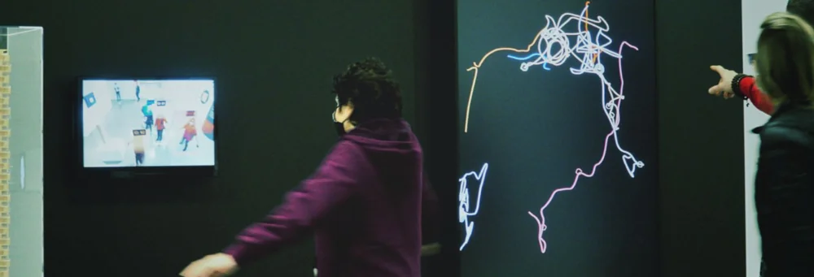
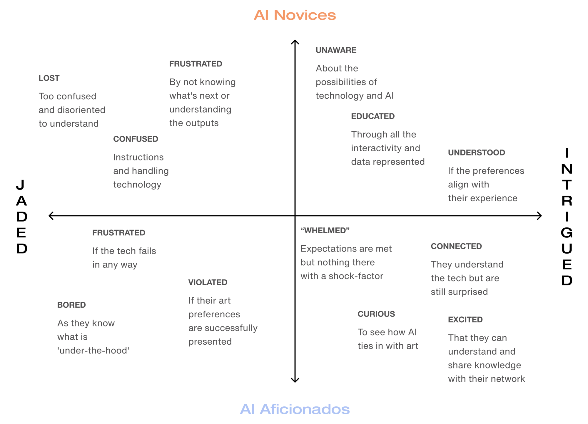
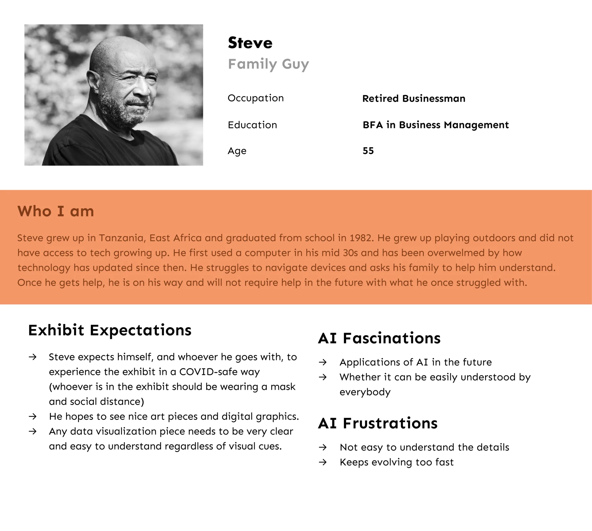
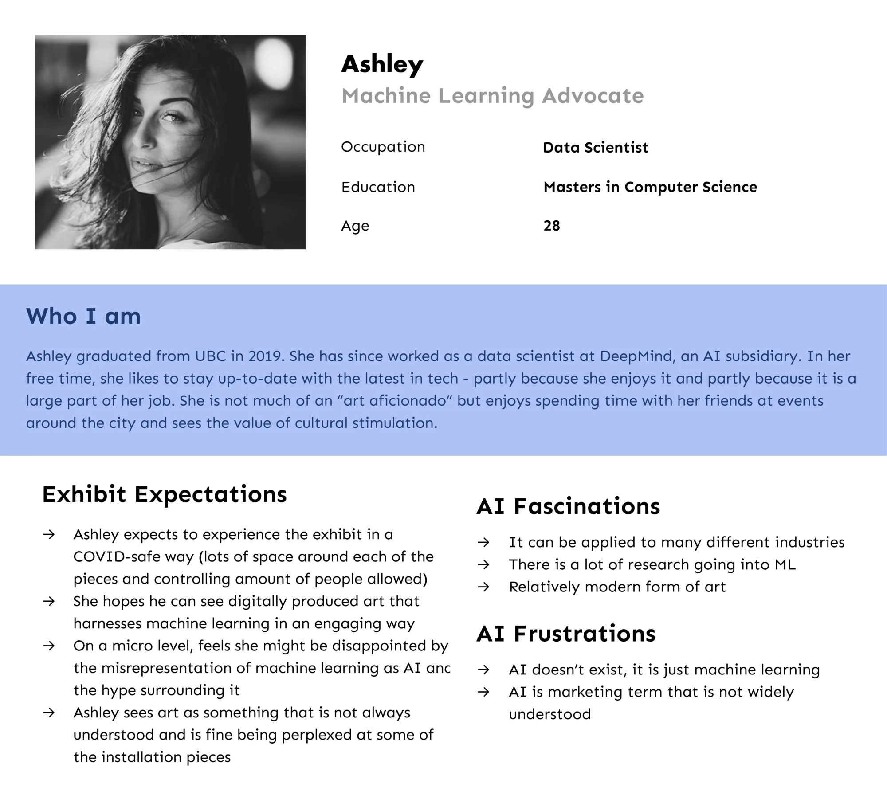
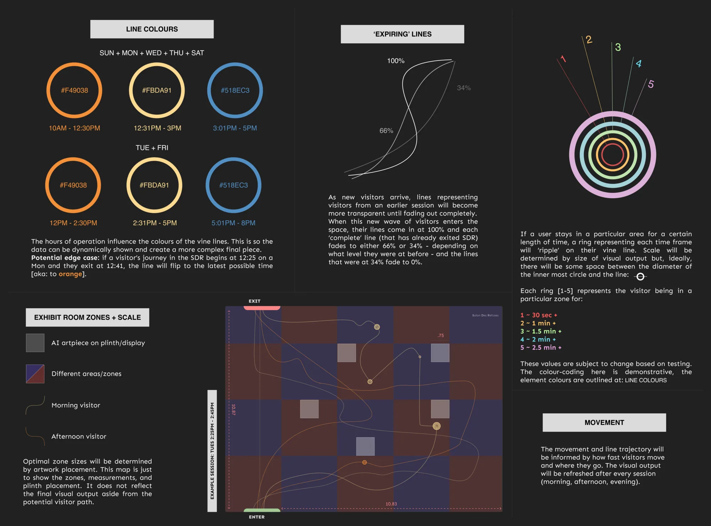
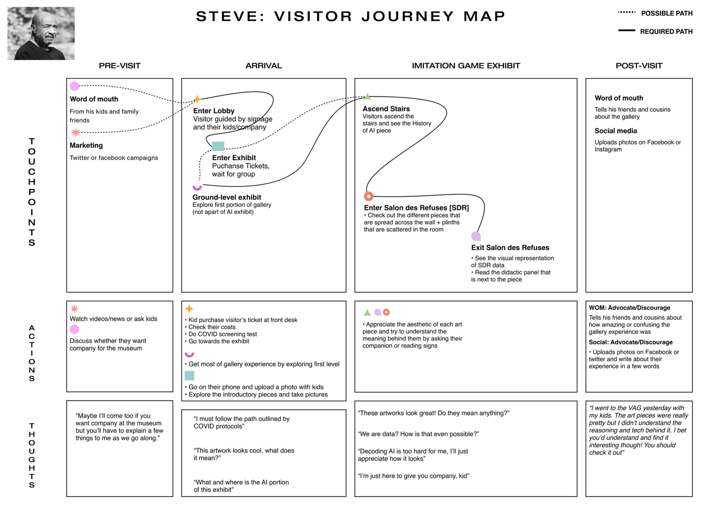
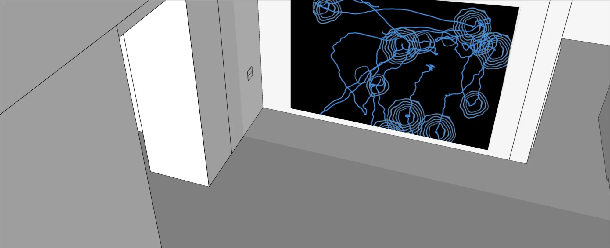
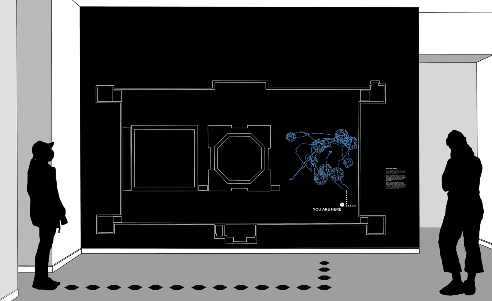
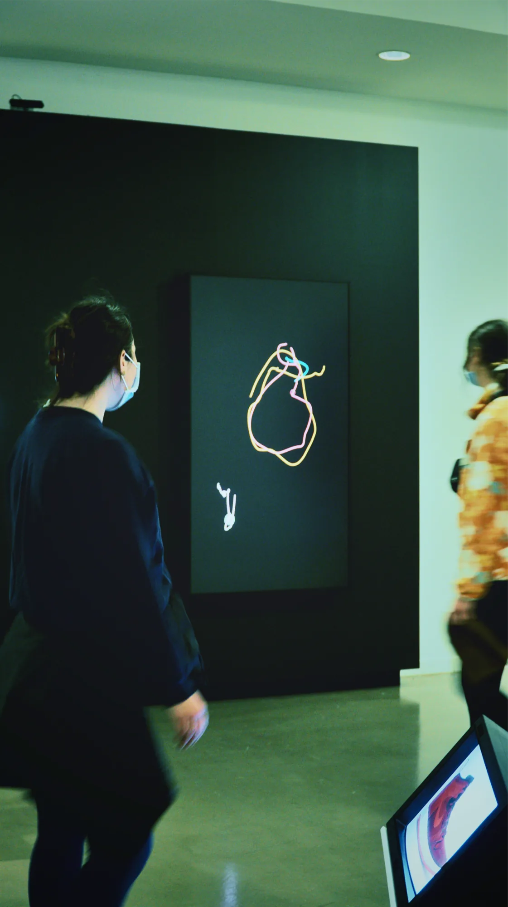
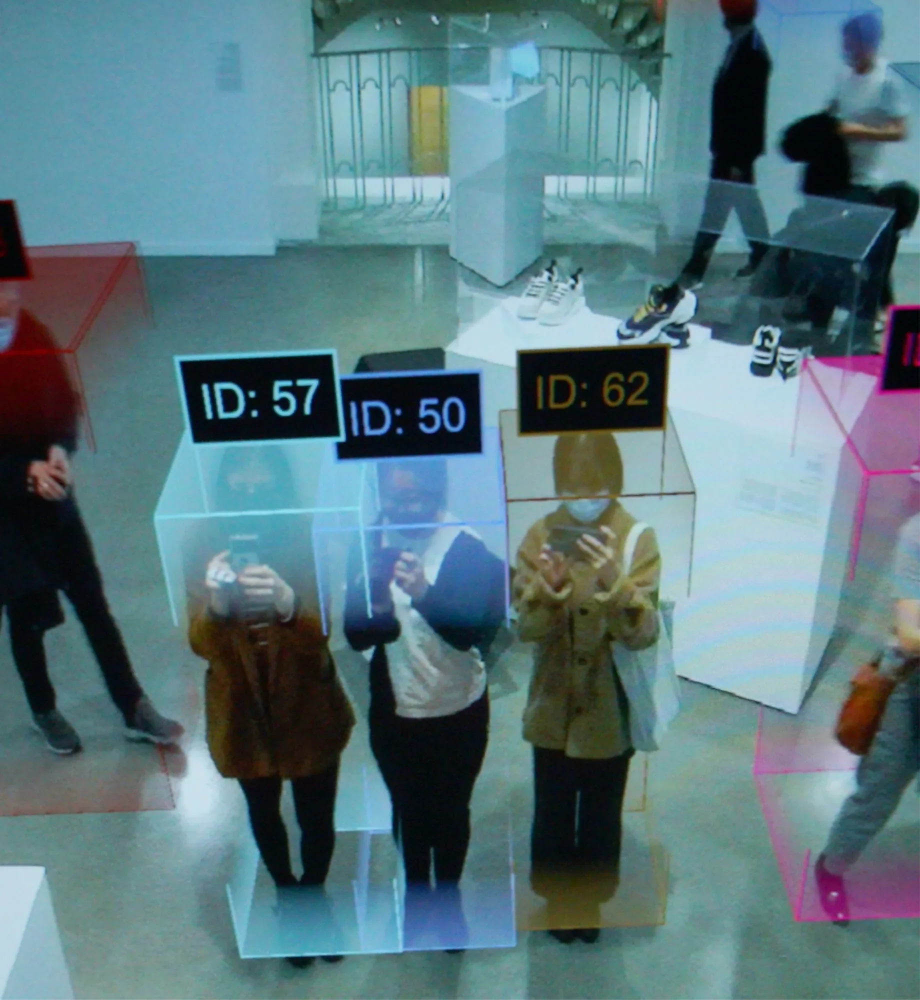

Van Art Gallery: AI Installation
Designing an award-winning AI installation for the Vancouver Art Gallery so visitors' movement through the room became the artwork.

Problem
The gallery's head curators asked my team to design, develop and implement an installation for Imitation Game, their exhibit on AI and visual culture, which ran from March to October 2022. It had to gather visitor data without getting in anyone's way, and show it back in a form that was attractive and "accurate-ish".
01Research
Visitors would arrive with completely different relationships to AI, and the piece had to hold all of them at once.
I plotted attitudes to AI on an audience spectrum, from 'the user is in control' through to 'the AI is a companion'. Two personas sat at either end: Steve, a retired builder, and Ashley, a museum learning advocate with a data science background.



02Concept
Each visitor became an anonymised, numbered, coloured path, drawn live on a nearby monitor.
The curators chose my idea: real-time human-detection software plotting movement and dwell time as it happened, so the piece doubled as artwork and research tool. The visitors became the artists.
03System
The line was a vine rather than a graph, so it grew.
I named the piece Creepers, and the name works both ways. It came from the feeling of being surveilled: cameras quietly following you round a room is a little creepy. And the lines climb and spread across the screen like a creeping plant.
I wrote its rules before anything was built. Colour was set by the hour of the day, dwell time rippled out as rings, and lines faded to 66%, then 34%, then out as each session's visitors left.

1 2 304Room
The rules had to be explained through the piece itself, so the room was planned around it.
I mapped the visitor journey and exhibition layout from the personas, and wrote the didactic panel. The room held one screen and one line drawing, and was kept dark enough to let the drawing carry it.



Creepers
Artificial Intelligence has edged its way into our daily lives, from predictive web searches at home to tracking visitor movements and displaying the visual output in galleries, as you see right here.
Along with every other visitor that has passed through the Salon des Refusés space, the path you took is now data. It was captured by AI-driven cameras that harness object detection to track movement. The input has been converted into a real-time, ever-evolving art piece.
Creepers’ output is completely dependent on how people move through the space. The only constant variables are the visual elements. Each line represents a visitor. Each colour represents the time of day they passed through and the rings indicate the amount of time someone spent in a particular area within the Salon des Refusés: 1 ring = 1 minute.
05Exhibit
Every visitor was detected, numbered and given a colour. The number and the colour were all anybody became.
Creepers was meant to be understood by any visitor, and to look good enough to enjoy without the deeper meaning. The paths cross, loop back and double up the way people actually move.


Results
across the run
Innovation in Digital Media
Awarded at the Centre for Digital Media.
What I learned
You can't design one explanation for a room full of people who arrive with completely different relationships to AI. The piece had to explain its own rules.